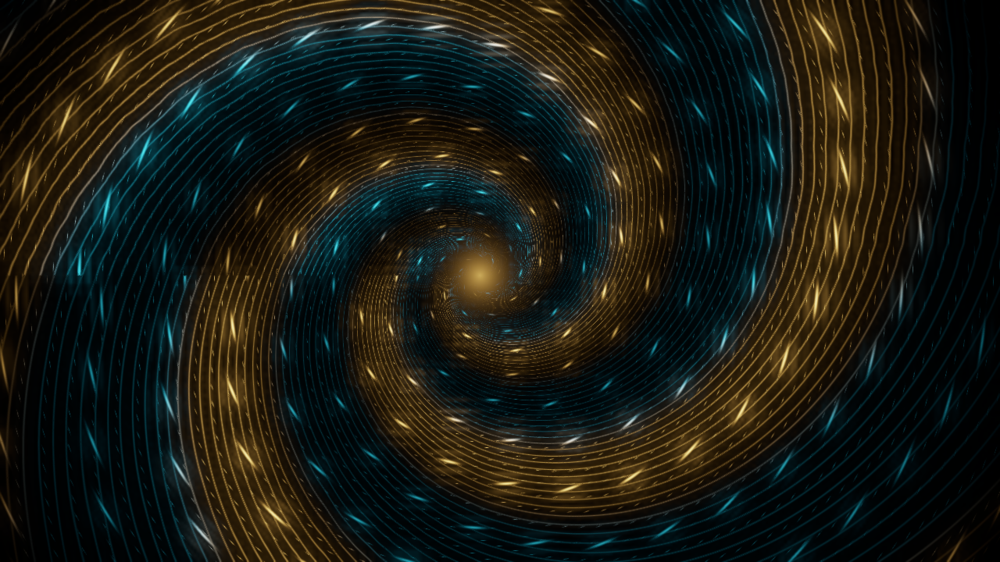
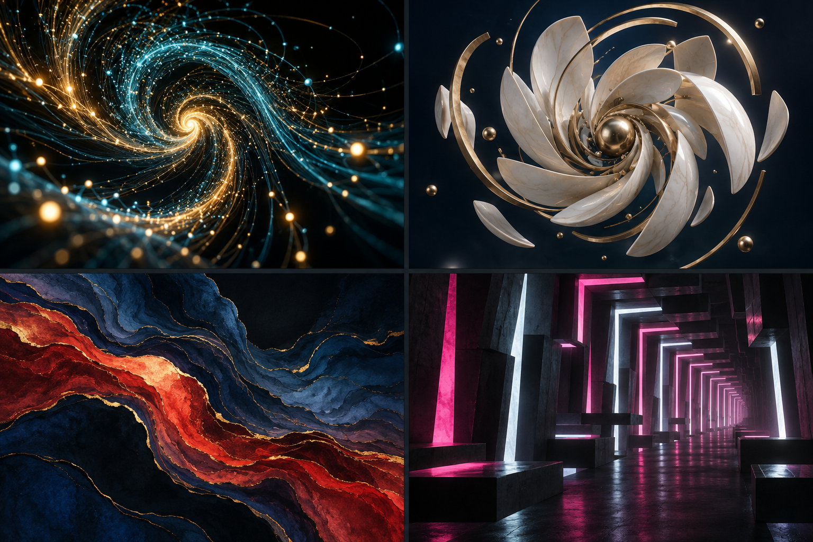
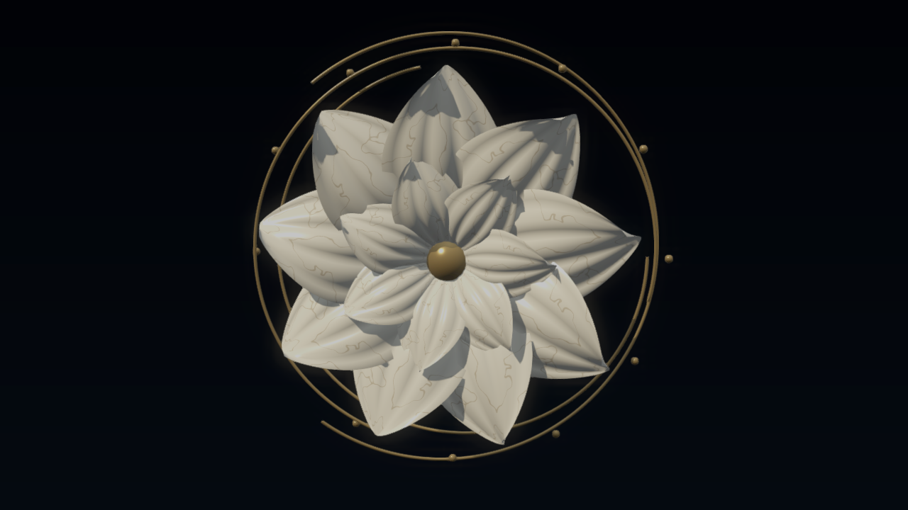
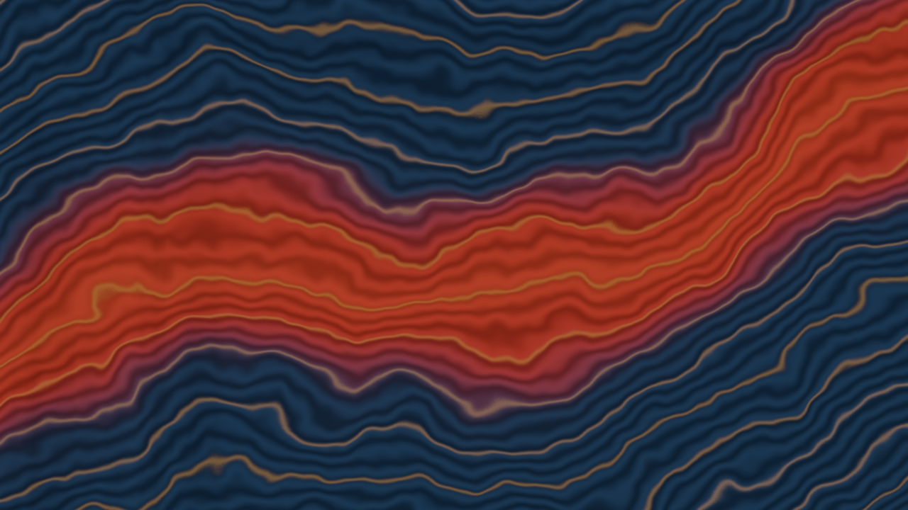
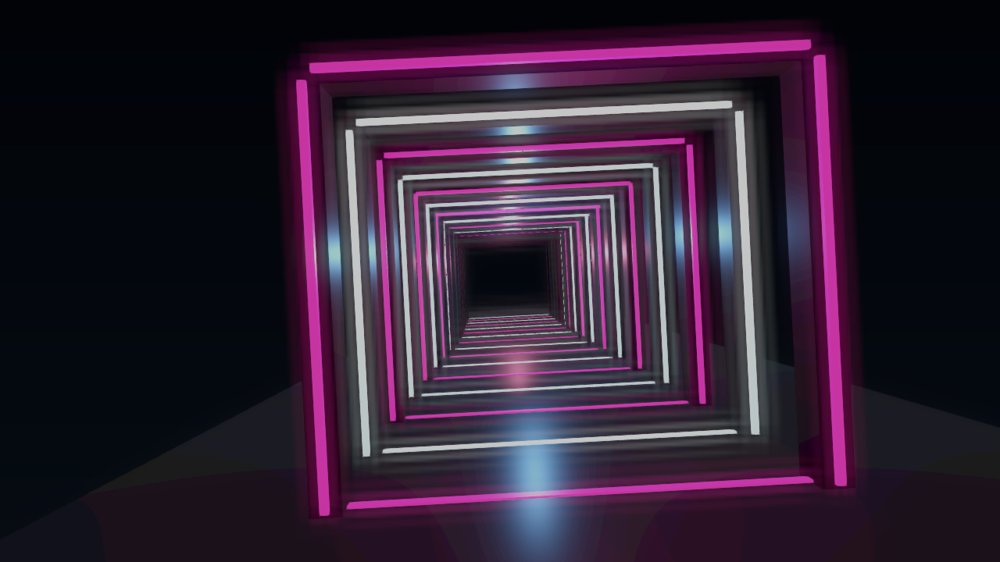

鎏光流涡 · aureate_vortex

青金流线、亮点与暗部分区已经成立。当前为解析式图像粒子外观，尚无体积粒子和真实景深。
2026-09-10 · 可编辑节点 / 三频段音乐响应 / 三个公开控件 / 16 秒音乐编排。以下是工程自评，最终审美等待你验收。

截图：1280 × 720，4 秒，同一解码音乐输入。视频：实际 Studio 编排导出，可直接播放并听配乐。

青金流线、亮点与暗部分区已经成立。当前为解析式图像粒子外观，尚无体积粒子和真实景深。

双层瓷瓣、细釉纹与断金环可辨。局部自阴影仍较硬，离概念的柔和摄影质感还有距离。

靛蓝朱红层带和金边构成斜向流动。目前更接近等高线，尚缺自然流体的细碎支流。

双色光门具有清晰纵深。门框仍较规整，地面未实现概念中的清晰镜面反射。